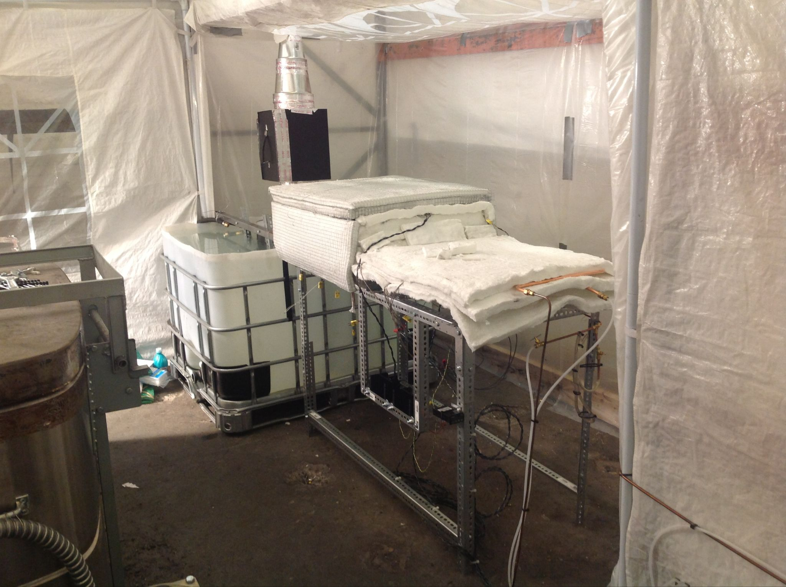
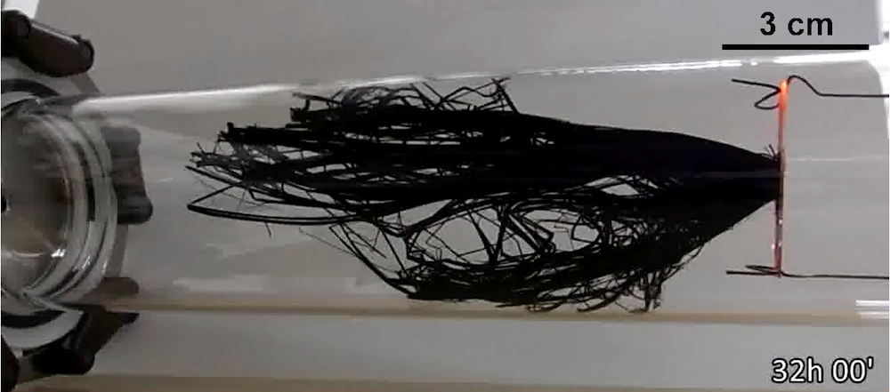

Carbon nanotubes are tubular molecules made of a carbon graphite sheet. These tubes can be a few nanometers diameter up to over 100 nanometers and be a singular tube or dozens of nested tubes. This arrangement of carbon atoms results in the strongest possible material existing at room temperature. For example, in tensile strength carbon nanotubes can be roughly 30 times stronger than the strongest steel. When compared to graphene or conventional carbon fibers (stacks of graphite sheets) the internal strength is the same though the external strength can be 30 times higher because the carbon nanotubes have no edges where tensile forces can concentrate and tear the sheet.
This history focuses on long carbon nanotubes of interest to construction of the space elevator. Since 2010 numerous companies have produced short (<10 micron length) carbon nanotubes by the ton for industrial applications. These nanotubes are too short for use in the space elevator or composite applications for strength improvement.
Figure 1: Array of carbon nanotubes. Image is an optical image of an array of ~2 mm long nanotubes seen from above.
Figure 2: Carbon Nanotube Production Oven. This system produces pounds of millimeter length nanotubes in two hours.
Figure 3: Forest of nanotubes grown by Hisashi Sugime, et. al.
| Carbon Nanotubes | Have been produced | Required for Space Elevator |
| Length | 55 cm | 2 cm |
| Strength | 200 GPa | 70 GPa |
| Quantity | 0.5 kg/hr/machine * | 1,000,000 kg |
* Operating 100 machines, 20 hours per day would produce 1,000,000 kg in 3 years.